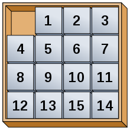

Regles du jeu.
Nous avons un carré de 3x3 ou plus, notre but est de remettre les cases dans la disposition d'origine.
Pour que le jeu soit possible, il manque une case afin de pouvoir deplacer les autres cases entre elles.
Au début du jeu, les cases sont melangées entre elles, le jeu est fini lorsque nous reussissons à repositionner les cases dans le bonne ordre .
Mais pas d'inquietude ! Notre jeu est bien fait, tu tomberas donc automatiquement sur un mélange qui est possible à résoudre !
attention a ne pas trop utliser l'aide quand on est en mode difficile car l'ida* est trop long et tinker freeze et passe en mode ne repond pas
Les touches sont inversable (deplacement selon le zero ou selon la case)